PROYECTO DE INVESTIGACIÓN
Inteligencia
Inteligencia
Artificial
Una guía educativa para conocer qué es la IA, cómo funciona, dónde se utiliza, cuáles son sus beneficios y qué retos plantea para nuestra sociedad.
IA
APRENDER
DATOS · MODELOS · DECISIONES
DATOS
APRENDIZAJE
INNOVACIÓN
20
temas educativos
08
áreas de aplicación
03
videos integrados
01
objetivo: aprender
CONOCE EL PROYECTO
Una página para aprender IA
El contenido está organizado en páginas independientes para facilitar la navegación, la lectura y la consulta de cada tema.
DESTACADOS
Algunos temas para comenzar
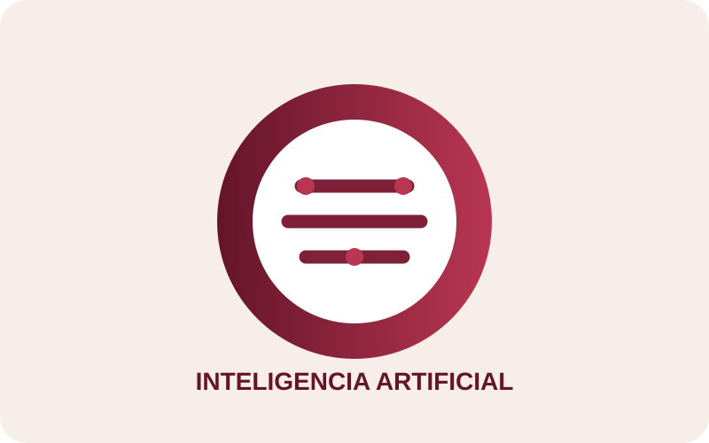
01
Introducción a la Inteligencia Artificial
Leer tema →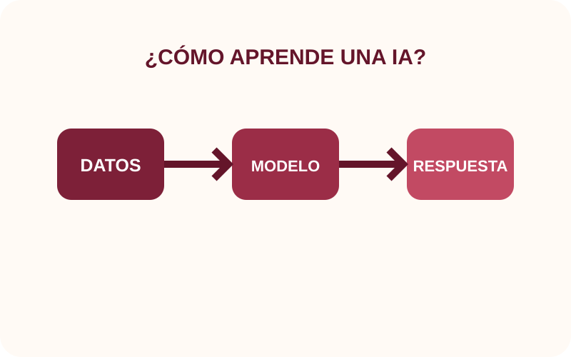
04
Funcionamiento de la Inteligencia Artificial
Leer tema →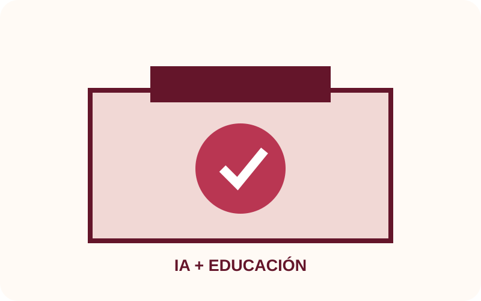
08
IA en la educación
Leer tema →
13
Riesgos y limitaciones de la IA
Leer tema →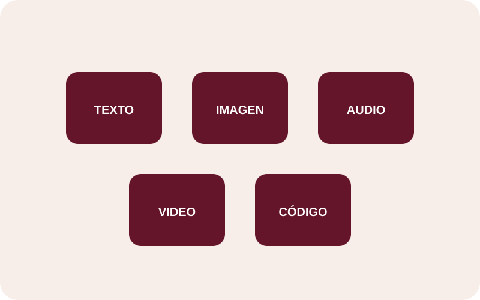
17
Inteligencia Artificial generativa
Leer tema →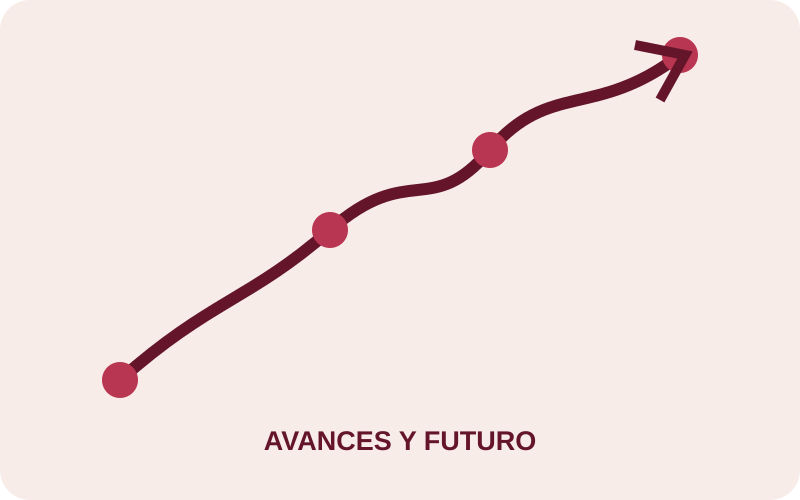
19
Avances y futuro de la IA
Leer tema →
VISTA PREVIA
La IA explicada con imágenes
Las ilustraciones acompañan cada tema para que la información sea más visual.
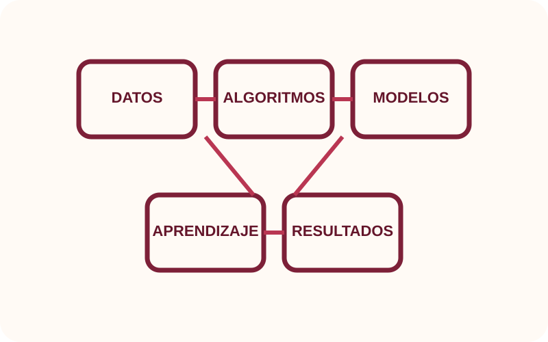
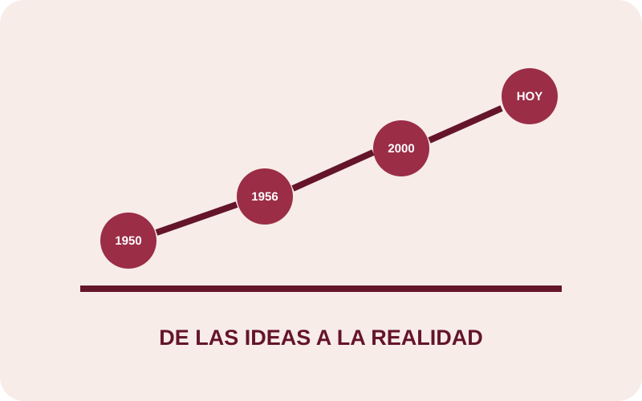
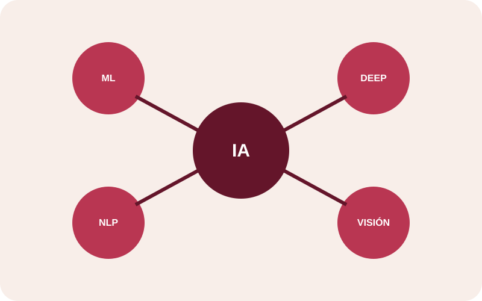
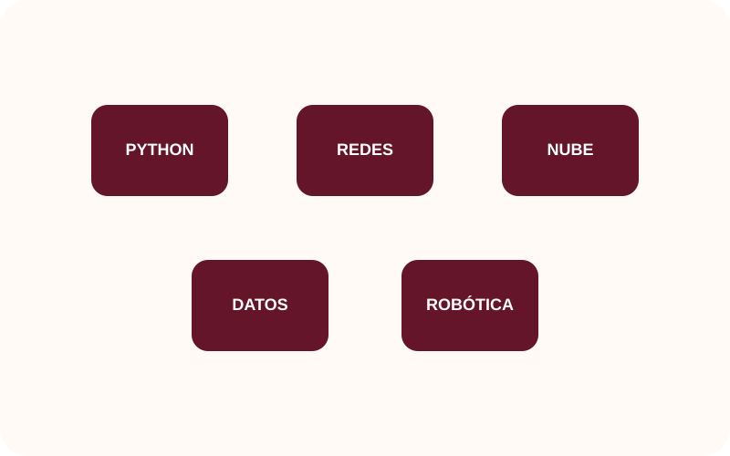
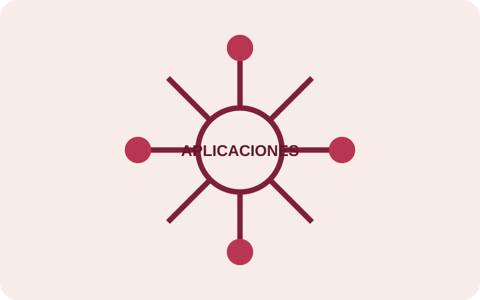
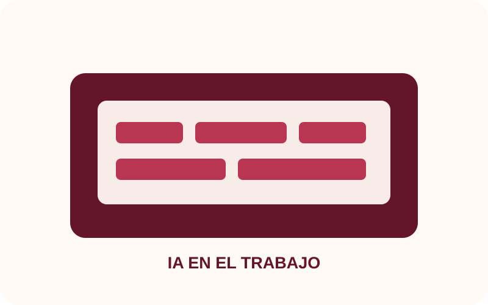